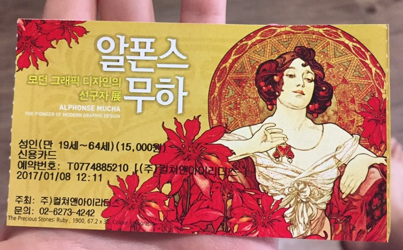

알폰스 무하, 현대 미술가들의 영감이 되어
이 전시회를 보러간 계기는 딱히 특별한 것은 없었다. 예술의 전당에 보러갈 공연이 있었는데 같은 곳에서 하길래 공연이 시작하기 몇시간 전에 가서 전시회를 한번 둘러보고 왔었다.
평소에 엄청 좋아하던 작가였다던가 관심이 있었던건 아니였다. 그저 그림이 예쁘다는 생각이 드는 정도 였다. 내가 무하전을 보고 크게 느낀건 무하의 그림이나 그가 지금도 다른 이들의 그림에 많은 영향을 끼쳤다는 부분은 아니였다.
그보다 무하가 디자인한 장식화들이 전시되어있는 곳에서 많은 생각이 들었다. 뛰어난 사람이라면 뭔들 못하겠느냐 싶은 생각도 들었지만 그의 그림으로 본인 스타일 변화 없이 디자인에 적용해서 작품을 만들었다는 것이 지금 내가 디자인을 배우는 것에 대해 조금은 긍정적인 생각이 들게 했다.
개인적인 얘기는 떠나서 전시회의 얘기를 하자면, 이전에 2013년에 열린 첫회고전에는 예술작품의 발전을 철학적 측면을 부각시킨 전시였으나 이번엔 제목처럼 모던 그래픽을 중점으로 성취한 것들을 전시했다고 한다. 그래서 그런지 년도별로 우편을 디자인한 일이나 표지 디자인 한일들이 전시 되어있다. 전시장 마지막에 알폰스 무하의 그림에 영향받은 작가들의 작품을 보여준 것도 그래서 였던거 같다.
전시회에서 좋았던게 몇번 봤던 무하의 작품들도 있었는데 정말 벽면 한가득 크게 볼 수 있어서 익숙했던 그림들도 새로운 느낌이 들었다.
알폰스 무하는 사라 베르나르의 연극인 지스몽다의 광고용 포스터를 만들면서 유명해졌다.
이와 관련 된 일화가 있는데
‘사라 베르나르가 그녀의 지스 몽다 역을 위한 새 포스터를 주문하기 위해 르메르시에 인쇄소의 매니저인 모르스 드 부르노프에게 전화했을 때, 무하는 친구의 부탁으로 이 인쇄소에서 교정쇄를 감시하는 일을 하고 있었다. 르메르시에 인쇄소의 모든 정규직 직원들이 연말휴가로 자리를 비운 상태였으며, ‘신성한 사라’의 다급한 요청에 의해 어쩔 수 없이 무하에게 포스터 제작이 맡겨졌다.’
네이버 캐스트 [테마로 보는 예술:화가의 생애와 예술] 알폰스 무하이후 광고, 포스터, 제품 포장등 다양한 장르의 작품을 만들게 된다. 우연한 기회였지만 이런 우연한 기회 덕에 알폰스 무하의 작품을 보게 될 수 있어 기쁘다.
실내 촬영은 금지되어 있어서 사진은 못 찍었는데 일화를 알고나서 실제로 영화 광고에 쓰여진 모습을 상상하니 내가 그 시절에 있었어도 이 작품을 보고 싶었을거 같았다. 아니 그랬더라면 알폰스 무하의 팬이 되었을지도 모르겠다. 제품의 포장지로 쓰인 것들도 하나하나 모았을거 같다. 버리기 아까울거 같다.
전시된 작품들 중에 나는 잡지 표지들이 유독 눈에 들어왔다. 그 중에서도 아래의 작품이 맘에들어서 엽서도 사왔다. 평소에 보던 알폰스 무하의 작품들과는 다른 느낌이 들었다. 작품앞에 서서 더 나아가질 못했다. 전시장내의 빛때문에 그럴진 몰라도 몽환적인 느낌이 들었다.
미국의 중산층 독자를 겨냥해서 발간된 소설이라고 한다. 개인적으로 가장 좋아하는 작품이다. 마땅히 사진을 못 찾아서 사왔던 엽서를 찍었다. 사실 전시 되었을 땐 좋았는데 출력된 이미지는 그 매력을 다 못담아서 조금 실망스러웠지만 안 샀으면 더 후회했을 뻔했다. 굉장히 밝은 느낌을 주는 다른 작품들과는 달리 어두운 느낌도 들고 봄 축제라는 제목과 다르게 웃음기 없는 표정이 매력적이라고 느껴졌다.
가서 또 인상 깊게 남은 작품은 <백합의 마돈나> 이다. 백합은 순결을 뜻하며 가톨릭에선 성모 마리아를 뜻한다고 한다. 미완성 작임에도 불구하고 굉장히 매료 되었다. 위의 작품도 그렇고 내가 봐왔던 작품들과 느낌이 달라서 더 새롭게 느꼈던거 같다.

티켓도 이쁘다
이 전시는 끝났지만 아마 또 알폰스 무하의 전시회가 열리지 않을까. 알폰스 무하의 작품에 관심이 생겼거나 관심이 없더라도 전시회에 갈 기회가 생긴다면 한번 쯤 가보는 걸 추천한다.